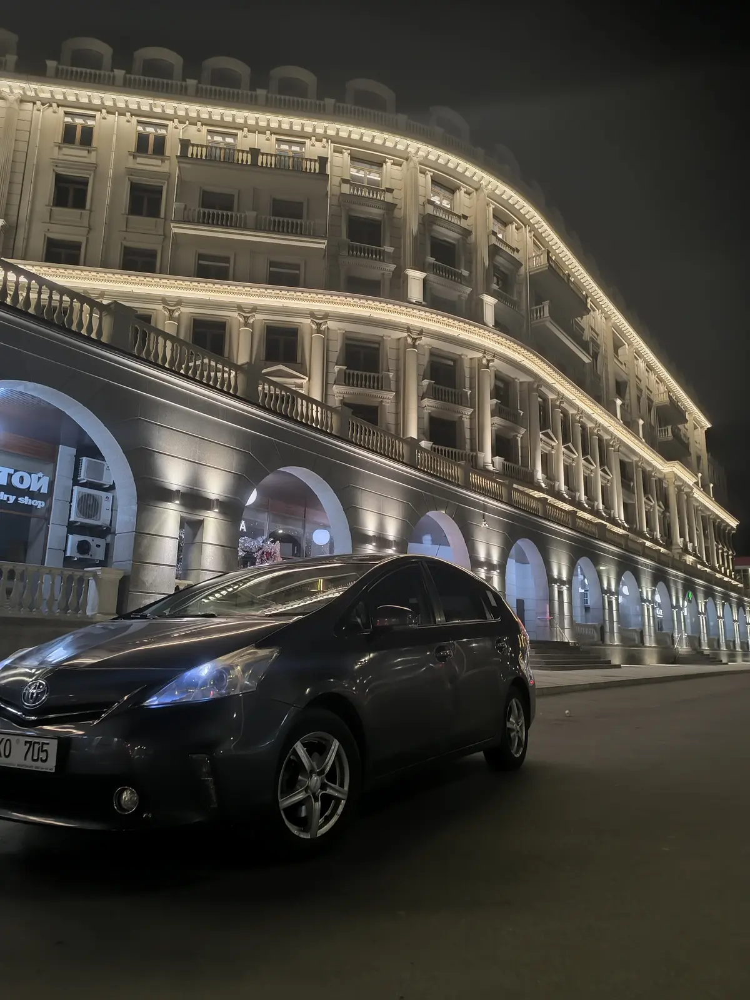

Toyota Prius+
Индивидуальный автомобиль для вашей семьи или компании. Количество пассажиров, детских кресел и чемоданов согласуем вместе: объём багажа влияет на размещение.
Нужна цена в молдавских леях, минивэн или условия задатка? Тарифы и условия бронирования.
Заполните детали — откроется WhatsApp с готовой заявкой. Поездка подтверждается после согласования с диспетчером.
Для поездки туда и обратно первый час ожидания бесплатно, каждый последующий час — 60 руб. ПМР (≈ $3,75). Обратную дорогу и общую стоимость согласуем до подтверждения заказа.
Сообщите время возвращения или примерную продолжительность приёма, встречи либо других дел. Ожидание при задержке авиарейса согласовывается отдельно от ожидания между поездками.
Время зависит от адреса подачи, трафика и прохождения контрольных пунктов. Для поездки к вылету рекомендуем оставлять дополнительный запас на дорогу и регистрацию.
При бронировании учитываем время рейса и помогаем выбрать разумное время выезда из Тирасполя.
Остаёмся на связи, а после получения багажа согласуем удобную точку встречи у аэропорта.
Помогаем с чемоданами, а детское кресло подготовим по предварительному запросу.
Работаем 24/7 по предварительной брони — в том числе ночью и рано утром.

Чтобы заказать поездку в аэропорт Кишинёва, сообщите дату, номер рейса, время вылета, адрес подачи в Тирасполе, количество пассажиров и багажа. После этого согласуем время выезда и заранее подтвердим стоимость.
Такой формат особенно удобен для ранних и ночных рейсов, поездок с детьми и большим количеством чемоданов: не нужно искать транспорт с пересадками или подстраиваться под расписание маршруток. Автомобиль подаётся к вашему адресу и везёт прямо к аэропорту.
В дороге доступны Wi‑Fi и вода. Если нужно детское кресло, сообщите возраст ребёнка при бронировании.
Обратный трансфер можно забронировать заранее вместе с поездкой в аэропорт или отдельно. При заказе укажите номер рейса и контакт пассажира. После посадки самолёта остаёмся на связи, а после получения багажа согласуем место встречи.
Если время рейса изменилось, просто сообщите новое время. Мы проверим возможность скорректировать подачу. После встречи поможем с багажом и доставим пассажиров без пересадок до нужного адреса в Тирасполе.
Пришлите дату, время вылета или прилёта, номер рейса и адрес.
Согласуем время подачи, стоимость и дополнительные детали заранее.
Доставим к терминалу или встретим после прилёта и отвезём в Тирасполь.
Предварительно от 500 руб. ПМР (≈ $31,25) за автомобиль. Актуальную стоимость подтверждаем перед бронированием.
Обычно около 60–90 минут. Для вылета лучше дополнительно закладывать запас на дорогу и регистрацию.
После получения багажа связываемся в мессенджере или по телефону и согласуем точку встречи.
Да. Трансферы выполняются 24/7 по предварительному заказу.
Для встречи после прилёта сообщите номер рейса и телефон пассажира. Место встречи согласуем заранее. Условия ожидания при задержке рейса уточняем при бронировании.

Принимаю заявки и остаюсь на связи до окончания поездки. Если заказ выполняет другой водитель, поездка остаётся под моим контролем.
Стоимость согласуем за автомобиль до подтверждения заказа. Сообщите об остановках, детском кресле и обратной дороге заранее.
Ответим и заранее подтвердим время подачи и стоимость поездки.
Индивидуальный трансфер 24/7 от адреса до адреса. Цена и условия поездки Тирасполь — Кишинёв →
Суммы в долларах США указаны ориентировочно по курсу 16 руб. ПМР за $1. Сумму и валюту оплаты согласуем при бронировании.
Индивидуальный автомобиль для вашей семьи или компании. Количество пассажиров, детских кресел и чемоданов согласуем вместе: объём багажа влияет на размещение.
Для 5–8 пассажиров или объёмного багажа уточним наличие подходящей машины и цену до подтверждения. Фото и модель согласуем при подборе.
Пришлите количество и размеры чемоданов, коляски и крупного багажа. Не выбирайте вместимость только по числу сидений.
Центр, Ботаника, Рышкановка, Буюканы, Чеканы: укажите точный адрес, а не только район. Цена «от» не означает одинаковую стоимость до любого адреса. Дополнительные остановки, дальнюю точку назначения и ожидание согласуем до подтверждения.